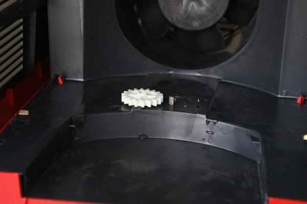

Расскажу-ка я о покупке в начале марта увлажнителя в магазине «Эльдорадо», которая закончилась ничем. Пост нужен мне для связки с другими постами, а вам, уверен, просто нужен.
Как я писал в посте про выбор мойки воздуха, в начале марта я поехал в магазин «Эльдорадо» на проспекте Советском в г. Кемерово и купил у них мойку воздуха Electrolux EHAW 6515. Чтобы кошелёк стал тоньше, а воздух чище. Кошелёк, действительно стал, а мойка была привезена домой и торжественно включена.
Поработала, правда, недолго. Вначале просто выключилась, но, вооружившись руками и глазами, я понял, что отходят контакты на крышке и, подогнув их, исправил неисправность. Спустя пару часов мойка шумела по-прежнему, но выдувала, отчего-то не влажный, а обычный комнатный воздух.
Я снял крышку и увидел, что с привода, который должен вращать смачивающиеся диски соскочила шестерня.

По внешнему виду шестерни было ясно, что держаться без клея она, скорее всего, не будет. Я попробовал её надеть на вал, но этого хватило минут на 30.
На следующий день я поехал возвращать мойку в магазин «Эльдорадо».
Перечислю случаи скотского отношения сотрудников магазина, с которыми мне пришлось столкнуться, чтобы не пришлось столкнуться вам.
1. Когда я принёс в магазин мойку девушка на ресепшне сказала, что никакую мойку она брать не будет и ей нужно заключение сервисного центра о том, что мойку сломал не я. Я ответил, чтобы она взяла эту мойку и делала какое угодно заключение. Девушка отказала. Встали читать закон о защите прав меня. В законе сказано, что магазин обязан сам возить товар по экспертизам в случае, если его вес больше 6 кг. Я не бы уверен, попросил весы. Девушка мешкалась недолго.
2. Чтобы не обременять себя мойкой девушка сказала мне, что мойку она возьмёт, но в случае, если экспертиза докажет, что её сломал я, услуги сервисного центра в размере 500 рублей, должен буду оплатить тоже я. Не будучи уверенным, что в сервисном центре работают умные, заботливые о потребителях люди, я взял направление в сервис и повёз мойку сам. В сервисе она пробыла около недели. Заключение было в мою пользу.
3. Когда я привёз мойку, всё та же девушка, дай бог ей хорошего мужа, отказалась у меня её принимать по причине того, что в заключении не был указан серийный номер мойки. Сервисный центр «Квэл» его не нашёл, а я как-то не догадался проконтролировать. Сказала, что будет делать запрос в течение недели. Я сказал, что сам съезжу в сервис и привезу нужное заключение. Привёз.
4. Казалось бы конец скоро. Но нет. В очередной раз сотрудники магазина «Эдьдорадо» на проспекте Советском в Кемерово решили послать меня куда подальше из магазина. Я привёз мойку, но не привёз инструкции. Уверенности в том, что инструкция была у меня, у меня не было, да и требование, на мой взгляд было абсурдным. Поэтому я просто решил орать на весь магазин о произволе. Помогло мало. Сотрудники магазина «Эльдорадо» рекомендовали мне вернуться домой и поискать инструкцию к мойке в интернете, чтобы затем распечатать её. Без инструкции — некомплект. Печатать инструкцию сами не хотели. Администратора звать не хотели. Я пошёл его искать по залу сам, ведь он «там где-то в белой рубашке». Администратор логично не встал на мою сторону, а стал разговаривать со мной как милиционер в ЖЭКе. Правда после нарочитого крика снизошёл и распорядился «примите у него без инструкции».
Вы всё ещё выбрасываете коробки от холодильника? Ну вы поняли…
Деньги маячили всё ближе.
5. За мойку, по обыкновению, я расплачивался, к тому времени уже три недели назад, банковской карточкой. Следовательно что? Следовательно вернуть деньги мне смогут только на неё же. В течение 3 дней. Я, конечно, не удивился, когда в течение 3 дней денег на карточке так и не увидел. Приехал в магазин. Ждал минут 30 старшего кассира. На что та сказала: «ничо не знаю, езжайте в Сбербанк, деньги там зависли, у нас такое бывает». Я ради того, чтобы не потерять форму, поспорил с этой преданной корпоративным принципам сотрудницей, но, конечно, безрезультатно. В глазах её была пустота. Ввиду того, что карта у меня не Сбербанка вовсе я решил подождать ещё с неделю, и дня через три деньги к счастью пришли.
Всё хорошо, что заканчивается возвратом денег.
Я в «Эльдорадо», по непонятным причинам, и раньше не очень, а сейчас так и вовсе обхожу его стороной. Чего желаю и вам, и вашим знакомым, и знакомым ваших знакомых.